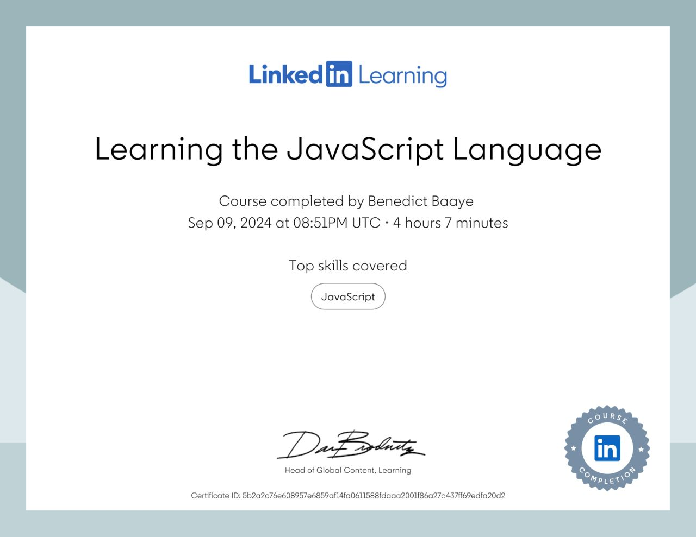
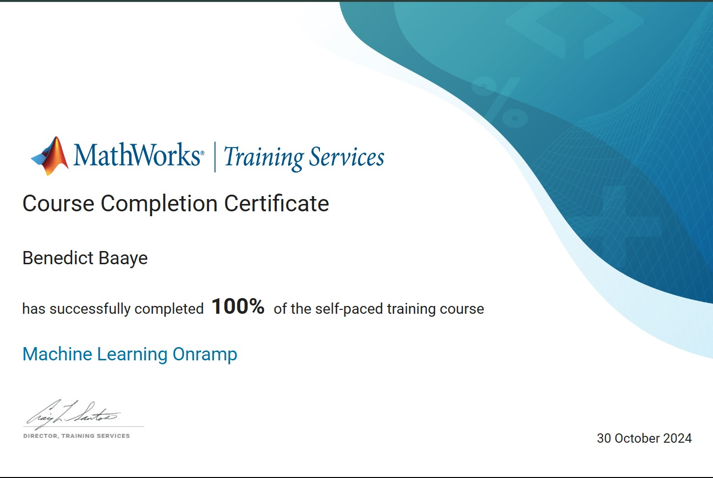
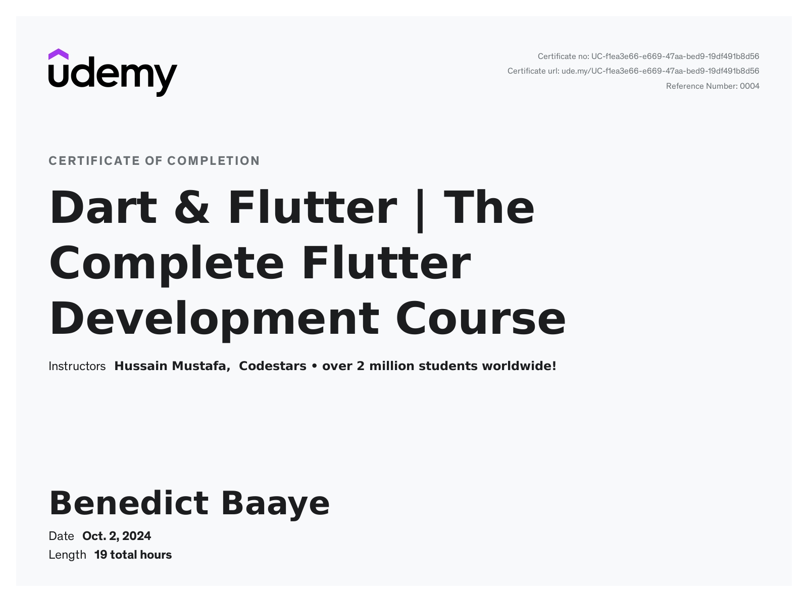
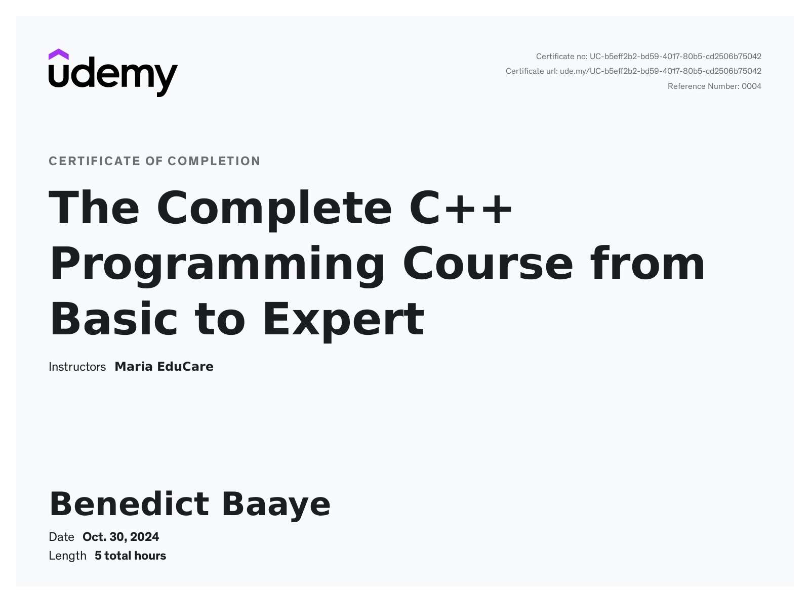

python
.jpg) I completed a Python coding course on LinkedIn, where I learned core programming concepts, data structures, and object-oriented principles. The course covered essential skills like writing efficient code, debugging, and using Python libraries for data manipulation. This experience equipped me with a strong foundation in Python for both data analysis and software development. The course also emphasized real-world applications, including automating tasks and working with APIs. Additionally, I gained hands-on experience with projects that honed my problem-solving abilities and prepared me for practical coding challenges.
I completed a Python coding course on LinkedIn, where I learned core programming concepts, data structures, and object-oriented principles. The course covered essential skills like writing efficient code, debugging, and using Python libraries for data manipulation. This experience equipped me with a strong foundation in Python for both data analysis and software development. The course also emphasized real-world applications, including automating tasks and working with APIs. Additionally, I gained hands-on experience with projects that honed my problem-solving abilities and prepared me for practical coding challenges.
javascript
I completed a JavaScript coding course on LinkedIn, where I learned the fundamentals of JavaScript, including syntax, data types, and control structures. The course covered advanced topics such as asynchronous programming, promises, and working with APIs. I developed skills in DOM manipulation, event handling, and building interactive web applications.
Through hands-on exercises, I created small projects that strengthened my understanding of JavaScript in real-world contexts. I also learned best practices for clean, efficient coding and debugging. This course has given me a strong foundation to build dynamic, user-friendly websites and applications.
machine learning onramp
I completed a Machine Learning Onramp course at MATLAB, where I learned core machine learning concepts and developed practical skills using the MATLAB environment. The course covered key supervised learning techniques, including classification and regression, and emphasized steps like data preprocessing, feature engineering, and model evaluation. I gained hands-on experience training models with algorithms such as decision trees, support vector machines, and k-nearest neighbors.Through interactive exercises, I honed my ability to select appropriate models, tune hyperparameters, and assess model accuracy using confusion matrices and cross-validation. Additionally, I learned essential skills for interpreting model results and adjusting for overfitting and underfitting. This course prepared me to confidently apply machine learning workflows in MATLAB, equipping me with the tools to tackle a variety of data-driven challenges.
dart & flutter
I completed a comprehensive Dart and Flutter course on Udemy, where I learned to develop cross-platform mobile applications. The course covered the fundamentals of the Dart programming language, including syntax, data types, and control structures, before diving into Flutter’s UI framework. I learned to build responsive, interactive UIs, work with widgets, and manage app state effectively.
Through hands-on projects, I developed skills in building complex layouts, handling navigation, and implementing animations. I also learned how to connect apps to REST APIs for real-time data and leverage Firebase for backend functionality. This course equipped me with the skills to create fully functional, visually appealing mobile apps compatible with both iOS and Android.
c++ basic to expert
I completed an in-depth C++ course on Udemy, which provided a comprehensive understanding of C++'s core features and capabilities. The course covered everything from fundamental programming concepts like variables, loops, and functions, to more advanced topics, such as object-oriented programming with classes, inheritance, polymorphism, and abstraction. I also learned essential memory management techniques, including working with pointers and dynamic memory allocation, crucial for creating efficient, optimized applications.
Throughout the course, I engaged in hands-on coding projects, developing practical skills in C++ libraries, handling input/output, and designing algorithms. I also practiced debugging and optimizing code, enhancing my problem-solving abilities. By the end of the course, I gained confidence in writing clear, robust C++ code and understanding the language’s suitability for high-performance applications, from games to systems programming.